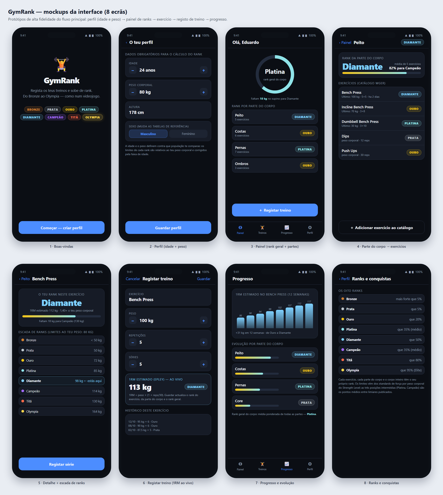

Relatório inicial — descrição do tema, abordagem de desenvolvimento, mockups e fluxo de navegação, funcionalidades a desenvolver e serviços externos a integrar.
A GymRank é uma aplicação iOS para registar treinos de ginásio que transforma a evolução da força num sistema de ranks de videojogo. Em vez de mostrar apenas números, cada levantamento dá ao utilizador uma posição clara — Bronze Prata Ouro Platina Diamante Campeão Titã Olympia — e diz-lhe exactamente quanto falta para subir.
O problema que motiva a aplicação é a perda de aderência ao treino de força: as apps de registo actuais devolvem tabelas de números sem significado imediato para quem não é atleta, e o progresso de meses fica invisível. A GymRank resolve isto com três decisões: (i) um rank por exercício, por parte do corpo e um rank geral, sempre relativo ao peso corporal do utilizador (um praticante de 60 kg não é comparado com um de 110 kg); (ii) um 1RM estimado ao vivo a partir de cada série registada; (iii) uma escada de progressão que mostra o próximo objectivo concreto em quilogramas.
A aplicação pede obrigatoriamente a idade e o peso do utilizador no primeiro arranque. O peso define contra que população o utilizador é comparado (os limites de cada rank são expressos em função do peso corporal) e a idade ajusta esses limites à faixa etária, uma vez que a força máxima de um praticante de 45 anos não deve ser medida com a régua de um de 25.
Desenvolvimento nativo em iOS, com Swift e SwiftUI. O enunciado do projecto individual impõe que a plataforma escolhida seja diferente da usada no projecto de grupo. O projecto de grupo (ErgoTwin) tem como cliente móvel uma aplicação Android nativa em Kotlin com Jetpack Compose; a escolha de iOS nativo cumpre, portanto, a regra e acrescenta competências novas em vez de repetir as do grupo.
@State/@Observable, que é o modelo natural para ecrãs que reagem a dados.Shape/Canvas/Chart, sem ficheiros de storyboard a manter.preferredColorScheme).RankEngine (puro, testável) separado das vistas.WgerClient com async/await, cache local e modo offline.A aplicação organiza-se num TabView com quatro separadores — Painel, Treinos, Progresso e Perfil — e em NavigationStack dentro de cada separador. O registo de treino é apresentado como sheet modal, para não perder o contexto do ecrã onde foi aberto. A figura 1 mostra o fluxo completo.
| Transição | Tipo | O que acontece |
|---|---|---|
| 1 → 2 | Push (primeiro arranque) | O utilizador cria o perfil. Idade e peso são obrigatórios; sem eles o Painel mostra um estado vazio com um convite para completar o perfil. |
| 2 → 3 | Substituição da raiz | Guardar o perfil grava em SwiftData e entra no TabView; os limiares de rank são recalculados para o peso e a idade indicados. |
| 3 → 4 | Push | Tocar numa parte do corpo abre a lista dos seus exercícios com o rank individual de cada um. |
| 4 → 5 | Push | Tocar num exercício abre o detalhe: rank actual, 1RM estimado, escada dos oito ranks com os limites em kg para o peso do utilizador e histórico. |
| 5 → 6 / 3 → 6 | Sheet modal | Registar uma série (peso, repetições, número de séries). O 1RM estimado é calculado enquanto o utilizador escreve. |
| 6 → 3 | Dismiss + recálculo | Guardar escreve a série, recalcula o rank do exercício, o rank da parte do corpo e o rank geral, e volta ao Painel com a alteração já visível. |
| 3 → 7 / 4 → 7 | Separador / Push | O separador Progresso mostra séries temporais de 1RM por exercício e a evolução de rank por parte do corpo. |
| Perfil → 8 | Push | Ranks e conquistas explica a escada completa, os percentis e o que falta para cada objectivo. |
Os oito ecrãs abaixo são protótipos de alta fidelidade do percurso principal, já com a linguagem visual da aplicação: fundo escuro, cor por rank e um elemento gráfico dominante por ecrã (anel de progresso, escada de ranks, gráfico de evolução).

| # | Ecrã | Objectivo e elementos principais |
|---|---|---|
| 1 | Boas-vindas | Comunicar a proposta em três segundos: identidade, promessa ("regista e sobe de rank") e a escada completa visível. |
| 2 | Perfil (idade e peso) | Recolher os dados obrigatórios do cálculo: idade, peso, altura e sexo. Steppers numéricos em vez de teclado para evitar erros de unidade. |
| 3 | Painel | Rank geral do corpo em anel de progresso, lista das oito partes com o respectivo rank e o objectivo mais próximo ("faltam 18 kg no supino para Diamante"). |
| 4 | Parte do corpo | Rank agregado da parte, barra de progresso para o rank seguinte e lista de exercícios do catálogo wger com o rank individual e o último registo. |
| 5 | Detalhe do exercício | Rank actual, 1RM estimado, factor relativo ao peso corporal (ex.: 1,40×) e a escada dos oito ranks com o valor em kg de cada limite e a marca "estás aqui". |
| 6 | Registar treino | Peso, repetições e séries com o 1RM estimado em tempo real e o rank resultante antes de guardar — a decisão de guardar é informada. |
| 7 | Progresso | Série temporal do 1RM estimado (12 semanas) e evolução do rank por parte do corpo, com o rank geral no fim. |
| 8 | Ranks e conquistas | Explicação dos oito ranks e dos percentis, para que o utilizador saiba o que cada rank significa e não apenas a cor. |
A coluna Prioridade indica o que faz parte do núcleo avaliado em Dezembro (P0), o que acrescenta valor (P1) e o que fica como extensão (P2). As linhas marcadas com ● são exigências explícitas do enunciado do projecto individual.
| Id | Funcionalidade | Descrição | Prior. | Exig. |
|---|---|---|---|---|
| F1 | Perfil do utilizador | Nome, idade, peso, altura e sexo. Idade e peso são obrigatórios e alimentam o motor de ranks; alterar o peso recalcula todos os ranks. | P0 | ● |
| F2 | Catálogo de exercícios (wger) | Sincronização do catálogo externo com nome, categoria, músculos, equipamento e imagem; cache local para uso offline. | P0 | ● |
| F3 | Navegação por parte do corpo | Oito partes (Peito, Costas, Ombros, Bíceps, Tríceps, Pernas, Gémeos, Core) com os exercícios que lhes pertencem. | P0 | ● |
| F4 | Registar treino | Séries, repetições e peso por exercício, com data; 1RM estimado por Epley. Operações completas de dados: adicionar, listar, ver, editar e remover. | P0 | ● |
| F5 | Rank por exercício | Um dos oito ranks por exercício, com a escada visual e a distância em kg para o rank seguinte. | P0 | — |
| F6 | Rank por parte do corpo | Agregação dos ranks dos exercícios dessa parte, com barra de progresso para o rank seguinte. | P0 | — |
| F7 | Rank geral do corpo | Rank único que resume a evolução global, em anel de progresso no Painel. | P0 | — |
| F8 | Histórico de treinos | Lista cronológica por exercício e por dia, com edição e remoção de registos. | P0 | ● |
| F9 | Gráficos de progresso | Séries temporais de 1RM, volume por sessão e evolução de rank por parte do corpo. | P1 | — |
| F10 | Percentil do utilizador | "Mais forte que X% dos praticantes do teu sexo, peso e idade", calculado a partir dos limiares publicados. | P1 | — |
| F11 | Conquistas e sequências | Objectivos desbloqueáveis (primeira subida de rank, 4 semanas seguidas, primeira série no Olympia). | P1 | — |
| F12 | Acessibilidade e tema | Dynamic Type, VoiceOver nos badges de rank, contraste verificado e tema claro/escuro. | P1 | — |
| F13 | Exportação de dados | Exportar histórico em CSV/JSON e partilhar um cartão de rank. | P2 | — |
| F14 | Lembretes de treino | Notificações locais configuráveis por parte do corpo. | P2 | — |
| Fonte | Uso na aplicação | Detalhes técnicos |
|---|---|---|
| wger REST API v2 wger.de/api/v2 |
Catálogo de exercícios: nomes, categoria, músculos principal/secundários, equipamento e imagens dos músculos. | API pública sem chave de autenticação, paginada, JSON. Endpoints previstos: /exerciseinfo/?language=2 (catálogo), /exercisecategory/ (8 categorias: Abs, Arms, Back, Calves, Cardio, Chest, Legs, Shoulders), /muscle/ (15 músculos com name_en), /equipment/. Consulta real já efectuada: 860 exercícios e 15 músculos. Licença CC-BY-SA 4.0: a aplicação mostra a atribuição e a fonte de cada exercício. |
Strength Levelstrengthlevel.com |
Referência dos limites de rank: standards de força por exercício, sexo e peso corporal. É a fonte dos valores do calculador, conforme indicado no enunciado. | Não existe API pública: os standards são usados como dados de referência publicados, convertidos para um conjunto de limiares empacotado com a aplicação e atribuído na secção "Sobre". Edição de 2026 dos standards: 287 exercícios, 195 513 376 levantamentos de 27 893 268 utilizadores (dados de 2014–2026). A extracção já efectuada cobre 27 exercícios em kg, com tabelas por sexo e por peso corporal. |
| SwiftData + FileManager | Persistência local: perfil, exercícios em cache, séries registadas e histórico de ranks. | Base local versionada e funcional offline; o catálogo é sincronizado quando há rede e servido da cache quando não há. Nenhum dado pessoal sai do dispositivo. |
Tools/fetch_standards.py) que guarda o resultado em Tools/standards.json; o relatório e a aplicação consomem esse mesmo ficheiro, pelo que os números apresentados na secção 7 podem ser reconferidos a qualquer momento.Esta secção é o núcleo técnico da proposta: como se transforma um levantamento em rank. Todos os números abaixo foram extraídos da fonte e podem ser reconferidos a partir de standards.json.
O Strength Level publica, por exercício e por sexo, cinco limiares em kg (Beginner, Novice, Intermediate, Advanced, Elite) que correspondem a "mais forte que 5%, 20%, 50%, 80% e 95%" dos praticantes. A GymRank usa esses cinco valores como âncoras e acrescenta três posições intermédias para obter os oito ranks pedidos:
| Rank | Limite (kg) para o exercício | Origem do limite |
|---|---|---|
| Bronze | abaixo do 1.º limite | — |
| Prata | ≥ Beginner | limiar publicado (mais forte que 5%) |
| Ouro | ≥ Novice | limiar publicado (mais forte que 20%) |
| Platina | ≥ (Novice + Intermediate) / 2 | ponto médio (35%) |
| Diamante | ≥ Intermediate | limiar publicado (mais forte que 50%) |
| Campeão | ≥ (Intermediate + Advanced) / 2 | ponto médio (65%) |
| Titã | ≥ Advanced | limiar publicado (mais forte que 80%) |
| Olympia | ≥ Elite | limiar publicado (mais forte que 95%) |
Os limiares publicados são valores de referência; o que decide o rank de um utilizador é o limiar para o peso dele. A aplicação guarda, por exercício, o ajuste obtido por regressão em escala logarítmica sobre as tabelas de peso corporal publicadas: limiar(BW) = limiar_ref × (BW / BW_ref)^b. Os valores de b e os dois pesos de referência (72 kg para homens e 68 kg para mulheres, calibrados contra a saída do calculador) fazem parte do pacote de dados.
| Exercício | Parte | b | Exemplo: cortes para homem de 80 kg (kg) |
|---|---|---|---|
| Bench Press | Peito | 0,22 | Prata 50 · Ouro 72 · Platina 85 · Diamante 98 · Campeão 114 · Titã 130 · Olympia 164 |
| Squat | Pernas | 0,22 | 68 · 97 · 116 · 134 · 156 · 177 · 224 |
| Deadlift | Costas | 0,92 | 88 · 124 · 147 · 170 · 196 · 222 · 279 |
| Bent Over Row | Costas | 0,99 | 48 · 69 · 83 · 97 · 113 · 129 · 163 |
| Shoulder Press | Ombros | 0,22 | 30 · 45 · 54 · 63 · 75 · 86 · 110 |
| Barbell Curl | Bíceps | 0,20 | 19 · 31 · 38 · 46 · 55 · 63 · 84 |
| Hip Thrust | Pernas | 0,28 | 46 · 88 · 116 · 144 · 179 · 214 · 295 |
| Machine Calf Raise | Gémeos | 0,21 | 44 · 84 · 112 · 140 · 175 · 210 · 290 |
| Leg Extension | Pernas | 0,60* | 21 · 36 · 46 · 57 · 69 · 82 · 110 (mulher, 60 kg) |
* Exercício sem tabela de peso corporal suficiente na extracção: usa-se o expoente por omissão (0,60). Os expoentes foram ajustados por regressão em log-log sobre as tabelas publicadas; os cortes em kg de cada linha são calculados com o expoente dessa mesma linha.
1RM = peso × (1 + reps/30), aplicada apenas a séries com 1 a 12 repetições; acima disso o valor é marcado como indicativo.Homem, 80 kg, 24 anos, supino com 105 kg: os cortes são 50 · 72 · 85 · 98 · 114 · 130 · 164 kg; com o coeficiente de idade 0,95 aplicam-se 48 · 68 · 81 · 93 · 108 · 124 · 156, pelo que 105 kg cai no intervalo de Diamante (93–108 kg). Faltam-lhe 3 kg de 1RM para Campeão.
| Período | Marco | Entrega verificável |
|---|---|---|
| 22–31 Out | Projecto SwiftUI, modelo SwiftData e perfil (idade/peso) | App corre no simulador com perfil persistido; testes unitários do modelo a passar em CI. |
| 1–14 Nov | Cliente wger + catálogo offline e navegação por partes do corpo | Catálogo sincronizado e servido da cache; navegação Painel → parte → exercício coberta por XCUITest. |
| 15–30 Nov | Motor de ranks (exercício, parte, geral) e registo de treino | Bateria de testes com fixtures reais dos standards; 1RM ao vivo; CRUD completo do histórico. |
| 1–8 Dez | Progresso gráfico, conquistas, acessibilidade e polimento | Gráficos, tema claro/escuro, Dynamic Type, VoiceOver; relatório de qualidade de código. |
| 9–10 Dez | Submissão | Código-fonte, README, slides, vídeo de demonstração de 2–3 minutos. |
| Risco | Impacto | Mitigação |
|---|---|---|
| Tabelas completas da fonte não acessíveis por extracção | Médio | Pacote de dados empacotado e versionado; captura das tabelas por peso/idade na fase de implementação; modelo alternativo documentado. |
| Indisponibilidade da API wger | Médio | Cache local obrigatória e sincronização incremental; o catálogo mínimo de arranque fica embutido na aplicação. |
| Sem Mac local para compilar | Médio | CI macOS (GitHub Actions), já provado nesta unidade curricular; verificação de compilação a cada push. |
| Licença dos dados de referência | Baixo | Atribuição visível na aplicação e no README; uso não comercial e apenas dos limiares derivados. |
| Critério | Peso | Como a proposta responde |
|---|---|---|
| Funcionalidade | 30% | CRUD do registo de treinos, três níveis de rank, persistência offline e integração com API externa (F1–F8). |
| UI/UX | 20% | Linguagem visual por rank, escada de progressão com objectivo em kg, painel com anel de progresso, tema escuro e acessibilidade (F12). |
| Qualidade de código | 20% | Motor de ranks isolado e testável, MVVM leve, cliente de rede com async/await e camada de cache, testes unitários e de interface. |
| Inovação | 15% | Gamificação da força em três níveis com comparação relativa a peso e idade, e cálculo do 1RM ao vivo durante o registo. |
| Documentação | 15% | Este relatório inicial, README com instruções de instalação e execução, e vídeo de demonstração. |